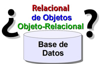

Las Bases de Datos Relacionales (BDR) son ideales para aplicaciones tradicionales que soportan tareas administrativas, y que trabajan con datos de estructuras simples y poco cambiantes, incluso cuando la aplicación pueda estar desarrolla en un lenguaje OO y sea necesario un Mapeo Objeto Relacional (ORM)
Pero cuando la aplicación requiere otras necesidades, como por ejemplo, soporte multimedia, almacenar objetos muy cambiantes y complejos en estructura y relaciones, este tipo de base de datos no son las más adecuadas. Recuerda, que si queremos representar un objeto y su relaciones en una BDR esto implica que:
- Los objetos deben ser descompuestos en diferentes tablas.
- A mayor complejidad, mayor número de tablas, de manera que se requieren muchos enlaces (joins) para recuperar un objeto, lo cual disminuye dramáticamente el rendimiento.
Las Bases de Datos Orientadas a Objetos (BDOO) o Bases de Objetos se integran directamente y sin problemas con las aplicaciones desarrolladas en lenguajes orientados a objetos, ya que soportan un modelo de objetos puro y son ideales para almacenar y recuperar datos complejos permitiendo a los usuarios su navegación directa (sin un mapeo entre distintas representaciones).
{kind=link}
Las Bases de Objetos aparecieron a finales de los años 80 motivadas fundamentalmente por dos razones:
- Las necesidades de los lenguajes de Bases de Datos Orientadas a Objetos (POO), como la necesidad de persistir objetos.
- Las limitaciones de las bases de datos relacionales, como el hecho de que sólo manejan estructuras muy simples (tablas) y tienen poca riqueza semántica
Pero como las BDOO no terminaban de asentarse, debido fundamentalmente a la inexistencia de un estándar, y las BDR gozaban y gozan en la actualidad de una gran aceptación, experiencia y difusión, debido fundamentalmente a su gran robustez y al lenguaje SQL, los fabricantes de bases de datos comenzaron e implementar nuevas funcionalidades orientadas a objetos en las BDR existentes. Así surgieron, las bases de datos objeto-relacionales.
Las Bases de Datos Objeto-Relacionales (BDOR) son bases de datos relacionales que han evolucionado hacia una base de datos más extensa y compleja , incorporando conceptos del modelo orientado a objetos. Pero en estas bases de datos aún existe un mapeo de objetos subyacente, que es costoso y poco flexible, cuando los objetos y sus interacciones son complejos.
Se refiere en el contexto de orientación a objetos, a descender por los diferentes nodos de la red o grafo de objetos.